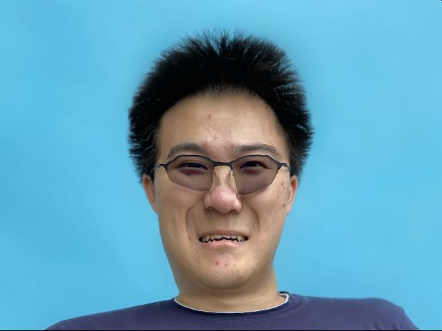
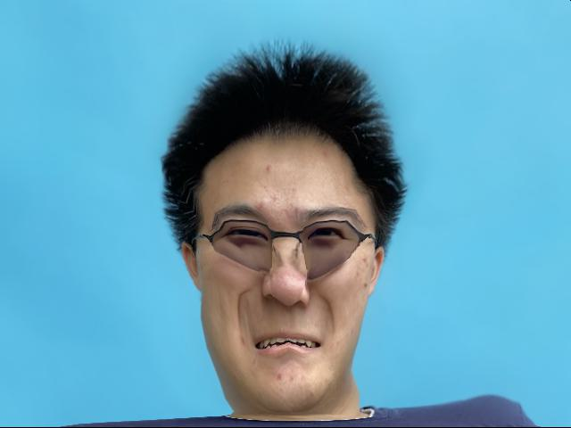

Face Morphing
"... But the human form has ten thousand changes that never come to an end."
—Chuang Tzu (Watson trans.)
Part 1: Defining Correspondences
Given a pair of face images (e.g., me.jpg from a department webpage and george_small.jpg from Martin Schoeller), we define a set containing pairs of key points corresponding to salient facial features (Fig. 1a-b, 77 points each). These points add constraints to our morphing so that important facial features will appear to move linearly.
Note that this was done manually, using either matplotlib.pyplot.ginput or a labeling tool developed by a previous student, depending on the images.
We then computed a triangulation for the two sets of points (Fig. 1a-b, 148 triangles), splitting the images into local regions that will be morphed independently. Specifically, we used the Delaunay triangulation of the mean between the two point sets.
Fig. 1a. Mesh of me.jpg. |
Fig. 1b. Mesh of george_small.jpg. |
|---|---|
Part 2: Computing the "Mid-way Face"
Given a shared triangulation, we can transform between two images by applying local affine transforms to each triangle and filling in pixel values with inverse warping.
Therefore, we can compute the "mid-way face" of two corresponding images by taking a convex (in this case, simple average) combination of each of the two images transformed to the average shape:
\[I_a:=(1-d)I_1[T_{S_a\mapsto S_1}S_a]+dI_2[T_{S_a\mapsto S_2}S_a]\tag{1}\]
Where \(I_1\) and \(I_2\) are the two images, \(S_1\) and \(S_2\) are the sets of corresponding triangles, \(S_a=(1-t)S_1+tS_2\) is the set of average triangles, and \(T_{A\mapsto B}\) denotes the affine transforms that map each triangle in A to the corresponding triangle in B.
We adopt this simplified notation that hides the loop over triangles, but assume that it is appropriately blocked so that each affine transform is indeed applied locally to the corresponding triangle, and that the indexing operation \([\cdot]\) accounts for (e.g., bilinear) interpolation during inverse warping.
Here, for the "mid-way face," \(d=t=0.5\) (Fig. 2).
Fig. 2a. me.jpg. |
Fig. 2b. "Mid-way face." | Fig. 2c. george_small.jpg. |
|---|---|---|

|
Part 3: The Morph Sequence
By varying the parameters \(d\) and \(t\) in the above formula \((1)\), we can generate a morph sequence between two images.
Here, we show morph sequences between me.jpg and george_small.jpg
with \(d=t\) varying linearly in \([0,1]\) over \(60\) frames (and then played in reverse for another \(60\) frames) (Fig. 3a),
as well as a version where \(t=\frac{1}{1+\exp(\tau)}\) where \(\tau\) varies linearly in \([-5,5]\) over the same number of frames (Fig. 3b).
| Fig. 3a. Linear morph. | Fig. 3b. Sigmoidal morph. |
|---|---|

|

|
Part 4: The "Mean Face" of a Population
With multiple faces from a given population and corresponding key points, we can consider various population statistics.
Here, we use the Danes dataset (\(37\) images) as a proof-of-concept.
The average shape of a population is simply the mean of the key points. We can then morph each face to this average shape again using formula \((1)\) with \(t=1, d=0\) (Fig. 4a-c), and compute the pixel-space average of these morphed faces to get the mean face of the population (Fig. 4d).
Fig. 4a. 01-1m.bmp. |
Fig. 4b. 35-1f.bmp. |
Fig. 4c. 34-1m.bmp. |
Fig. 4d. Mean face of Danes. |
|---|---|---|---|

Original Morphed |

Original Morphed |
Original Morphed |
We can treat the mean face as a regular image as well, and can warp its geometry to match another image (e.g.,
me.jpg) and vice versa (Fig. 5a-d).
Indeed, we find that the warped faces capture shape features of their respective references.
Fig. 5a. me.jpg. |
Fig. 5b. me.jpg to mean_dane.jpg. |
Fig. 5c. mean_dane.jpg to me.jpg. |
Fig. 5d. mean_dane.jpg. |
|---|---|---|---|
Part 5: Caricatures: Extrapolating from the Mean
If we let \(t\) vary outside the range \([0,1]\) in formula \((1)\), we can extrapolate from a reference image to create a caricature emphasizing features of the other image.
We show a range of results for \(t\in\{-1, -0.75, -0.5, -0.25, 0, 0.5, 1, 1.25, 1.5, 1.75, 2\}\) (Fig. 6a-k).
| Fig. 6a. \(t=-1\). | Fig. 6b. \(t=-0.75\). | Fig. 6c. \(t=-0.5\). | Fig. 6d. \(t=-0.25\). | Fig. 6e. \(t=0\). | Fig. 6f. \(t=0.5\). | Fig. 6g. \(t=1\). | Fig. 6h. \(t=1.25\). | Fig. 6i. \(t=1.5\). | Fig. 6j. \(t=1.75\). | Fig. 6k. \(t=2\). |
|---|---|---|---|---|---|---|---|---|---|---|
|  |  |
Bells 🔔 and Whistles 🥳
We can change ethnicity-specific features by morphing between faces. In particular, we can change the shape, appearance, or both. We again note that there is a reduction to formula \((1)\);
changing shape is equivalent to \(t>0, d=0\) while changing appearance is equivalent to \(t=0, d>0\). We show the results below using the Danes dataset mean face (Fig. 7a-d).
| Fig. 7a. Original images. | Fig. 7b. Shape change only (\((t,d)=(0.5,0)\)). | Fig. 7c. Appearance change only (\((t,d)=(0,0.5)\)). | Fig. 7d. Shape and appearance change (\((t,d)=(0.5,0.5)\)). |
|---|---|---|---|
|
|
Comment: A Manifold of Faces
The fact that piecewise/local affine warping can be used to create perceptually convincing morphs between faces suggests that faces live in a low-dimensional manifold of image space. Indeed, one could reasonably surmise that the dimensionality of an image class should be roughly proportional to the number of key points it admits for good morphing. We then note that we are traversing this manifold along very restricted paths (linear ones, in particular! Indeed, given two input images, a line is the most reasonable trajectory to construct), and it is not difficult to imagine incredibly rich families of transformations that we might be able to perform given more access to the space (e.g., a large dataset forming a perceptual prior). Thus, the space is vast, the possibilities are endless, yet the perception is simple.